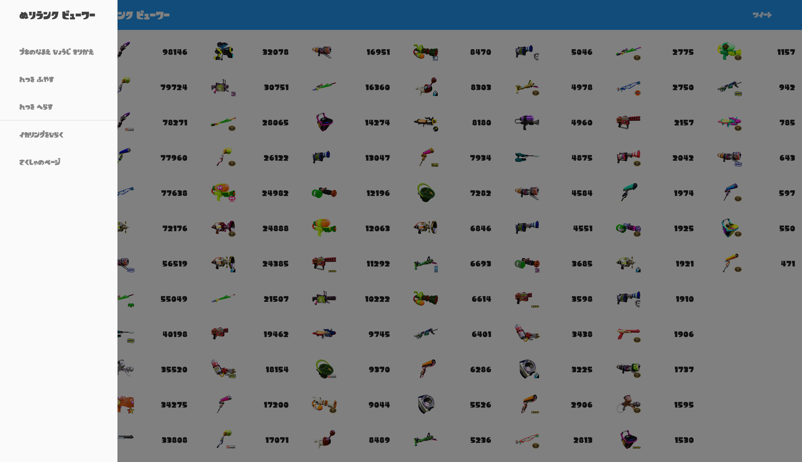
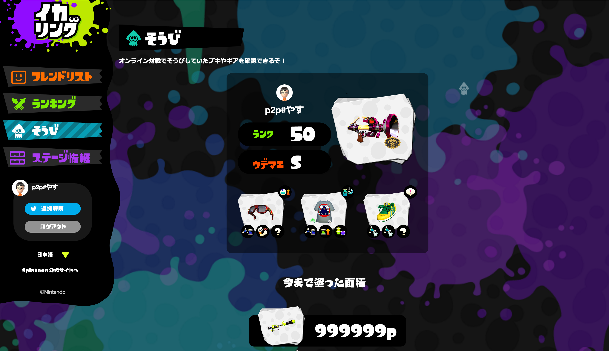
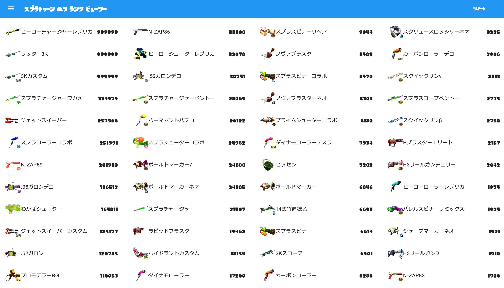

スプラトゥーン ぬりランク ビューワー
スプラトゥーンの ブキの ぬりランキングを みやすくするための ツールだよ
グーグル クローム で ひらこう
はっきり いって ほかの ブラウザは ダサい
つかいかた
- したの もじれつを コピペして ブラウザの おきにいりに とうろく しよう
- イカリング の そうび の ページを ひらこう 
- イカリング の そうび の ページを みている じょうたいで さっき とうろくした おきにいりを ひらこう
- こんな がめんが ひらく はずだ。 ブラウザの ポップアップは きょか しておいてね 
- ひだりうえの メニューから ひょうじを きりかえることが できるよ